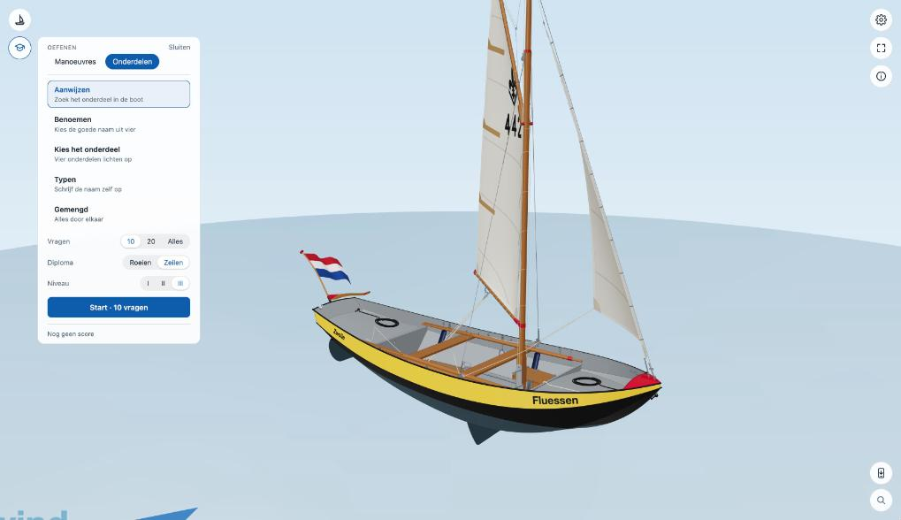
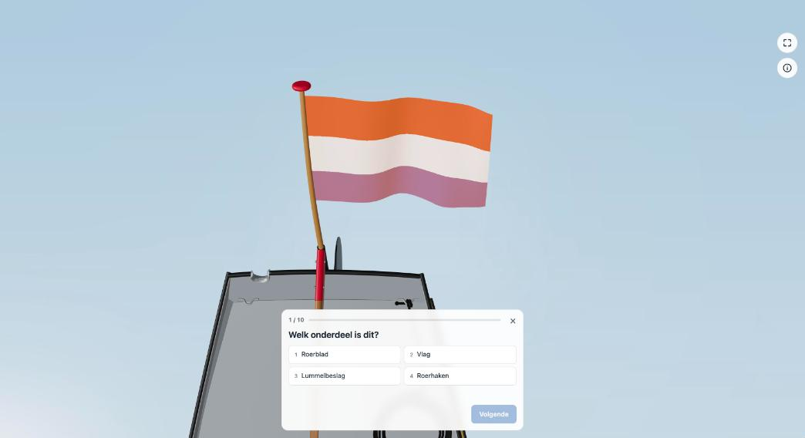

Onderdelen oefenen
Een quiz over de namen van de onderdelen, op het niveau van je diploma.
Een ronde kiezen


Open Oefenen en kies Onderdelen. Er zijn vier soorten oefening, en een mengvorm:
- Aanwijzen: de naam staat er; klik het onderdeel aan in de boot en bevestig.
- Benoemen: het onderdeel licht op; kies de goede naam uit vier.
- Kies het onderdeel: vier onderdelen lichten op in vier kleuren; kies welke de genoemde is.
- Typen: het onderdeel licht op; typ de naam zelf. Een kleine typefout, hoofdletters of de/het ervoor rekenen we niet fout. De goede schrijfwijze zie je daarna altijd.
- Gemengd: alles door elkaar.
Daaronder kies je hoeveel vragen (10, 20 of alles), het diploma (Roeien of Zeilen) en bij zeilen het niveau (I, II of III). Hoe hoger, hoe meer onderdelen erbij komen. De niveaus zijn die van CWO Roeien en CWO Zeilen.
Een vraag


De camera vliegt naar het onderdeel. Antwoord met een klik of met 1 tot 4, en ga verder met Volgende. Na de ronde zie je je score; met Oefen je fouten krijg je de vragen die je fout had nog een keer. Je beste score wordt in je browser onthouden.
Welke onderdelen op welk niveau gevraagd worden, staat in de lijst met onderdelen. Een groep die de viewer op de eigen site zet, kan zelf vragen weglaten of toevoegen.